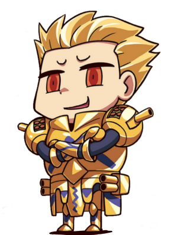
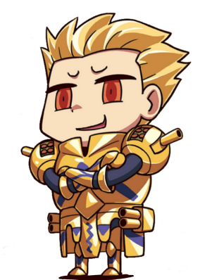
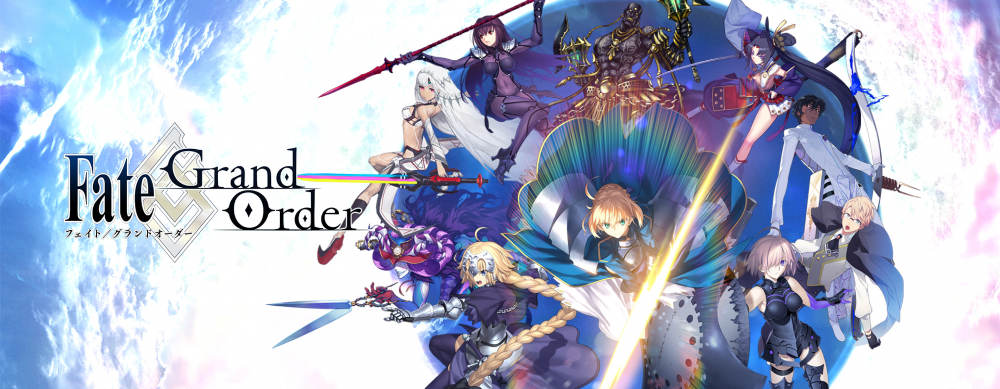

Welcome to my website!
This website is all about Fate Grand Order and my favourite servants from the mobile game! There will be a page featuring my favourite servants, a page for showcasing their noble phantasms, and a page to contact me.
The game is centered around turn-based combat where the player, who takes on the role of a "Master", summons and commands powerful familiars known as "Servants" to battle enemies.
The servants are typically historical, literary, and mythological figures from various cultures. The story narrative is presented in a visual novel format, and each Servant has their own scenario which the player can explore. Servants are obtained through the gacha mechanic.